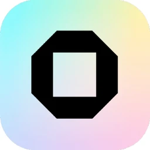

01
Monter tes souvenirs de vacances
Tu glisses tes clips, tu coupes les temps morts, un titre, la musique, un plongeon au ralenti, et tu exportes en MP4.
Tes clips→Timeline→MP4

Un éditeur vidéo gratuit et open source, dans ton navigateur : sans compte, sans filigrane, et tes vidéos restent sur ton appareil.

OpenCut est un éditeur vidéo gratuit et open source, présenté comme l'alternative à CapCut. On l'utilise dans le navigateur : timeline multipiste, découpe, textes, musique, vitesse (avec la hauteur du son conservée), images clés, masques, flou, stickers, format libre (vertical 9:16 compris) et export MP4. Le README promet que tes vidéos restent sur ton appareil. Attention : le dépôt principal est en pleine réécriture depuis mai 2026 (cœur en Rust, applis bureau et mobile prévues). La version à utiliser aujourd'hui est la version « classique », qui fait tourner opencut.app.
Rien à installer et aucun compte : ouvre opencut.app dans un navigateur récent avec l'accélération graphique (l'éditeur prévient si ton navigateur ne la gère pas). C'est la version classique, celle que le projet conseille aujourd'hui.
RecommandéLa version classique s'héberge avec docker compose up -d (dépôt opencut-app/opencut-classic), puis s'ouvre sur localhost:3100. Ce dépôt est archivé depuis le 17 mai 2026 : il marche, mais ne reçoit plus de correctifs.
Pour bidouillerPrévues dans la réécriture, avec un seul cœur en Rust pour le web, le bureau et le mobile. Pas encore de version publique : les premiers essais passent par le Discord du projet.
Pas encoreTu glisses tes clips, tu coupes les temps morts, un titre, la musique, un plongeon au ralenti, et tu exportes en MP4.
Toile verticale 9:16, textes, stickers et sous-titres (générés ou importés depuis un fichier de transcription).
Images clés avec éditeur de courbes : position, taille et rotation animées, copiables d'un élément à l'autre.
Capture d'écran + voix off sur plusieurs pistes, flou pour masquer une info, masques pour cadrer, vitesse pour accélérer les passages lents.
Vidéo de famille ou interne au boulot : rien n'est envoyé sur un serveur, d'après le projet, et aucun compte n'est demandé.
Projet sous MIT, très suivi, qui promet de garder tes vidéos sur ton appareil. À surveiller : la réécriture complète en cours, la version classique archivée et des bugs encore ouverts.
Plus de 1 500 commits ; la réécriture avance sur la branche principale, mais aucune nouvelle version publiée depuis la 0.3.0 d'avril 2026.
GitHub affichait environ 97 400 étoiles et 9 700 forks ; les contributions extérieures sont suspendues pendant la réécriture (Discord et tickets restent ouverts).
Les vidéos restent sur ton appareil d'après le README, sans compte ; pas d'audit indépendant publié.
Gratuit sous MIT, sans offre payante ni filigrane ; financé par des sponsors.
Version 0.x, réécriture complète en cours et version classique archivée : encore jeune pour de gros projets.
Comment on note : 5 critères notés sur 5, vérifiés sur GitHub, le README officiel et les notes de version le 14 novembre 2026. La note sur 10 est la moyenne ramenée sur 10.
Bon pour : Monter vite, sans compte ni abonnement
Bon pour : Les modèles, effets et outils IA tout prêts
Bon pour : Le montage pro et l'étalonnage, avec un bon PC
Bon pour : Un logiciel libre installé, mature
OpenCut est en pleine réécriture : garde tes fichiers d'origine et exporte souvent tes projets importants.

Chaque vidéo RepoPop t'explique un dépôt GitHub utile en moins d'une minute, avec son kit comme celui-ci.